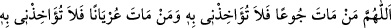

sıkıntı zamanlarında sabretmek, bolluk zamanlarında şükretmek ve imkân buldukça
Allah yolunda infak etmektir.
el-Esrâru’l-Muhammediye’de der ki: Üveys Karanî (r.h.) her sabah ve akşam evinde
olan fazla yiyecek ve giyecekleri sadaka olarak verir ve şöyle duâ ederdi:
“Allah’ım! Açlıktan bir kimse ölürse beni onun yüzünden muâheze etme, kınama.
Çıplak olarak bir kimse ölürse ondan dolayı beni kınama!”
Hallâc (r.h.) kendi hâlini haber vererek şöyle derdi: “Bir kimse yirmi gün aç vaziyette
otursa da sonra bir gün yiyecek imkânı doğsa, fakat o beldede bu yiyeceğe kendisinden
daha muhtaç bir kimsenin olduğunu öğrendiği halde onu kendisine tercih etmeyip o
yiyeceği yese rütbesini kaybeder.” Bu makam görünüşe göre Üveys’in makamından
daha yüce bir makâmdır.
Kâmil şeyh Muhammed b. Ali Arabî/İbn Arabî şöyle demiştir: “Bilesin ki Üveys’in
sözü onun yüksek makamına ve mükemmel kutbiyyetine işâret ediyor. Çünkü bu söz
vaktin îmamının hâlini ifâde ediyor. Sâhip olduğunu veriyor ve kendisini kullarına halife
kılan Allah’a onlara rahmet etmesi ve şefkat göstermesi için bu şekilde tazarrû ve
niyazda bulunuyor. Mükemmil olan başkasını kemâle erdiren, rahmeti gadabına gâlib
olandır. Nitekim Allah Teâlâ halifelerin en kâmili ve kutubların efendisi hakkında: “Biz
seni ancak âlemlere rahmet olarak gönderdik.” (el-Enbiyâ, 21/107) buyurmaktadır.
Fakat ârif, Hallâc gibi hâl sâhibi olduğu zaman kendi nefsiyle diğer insanların nefsine
farklı davranır. Kendi nefsine şiddet, kahır ve azabla muâmele eder, diğerlerine ise
onları kendisine tercih ederek îsar, rahmet ve şefkatle muamele eder.
Hâl ile makam arasındaki farkı bilmek sûretiyle makâm, temkîn ve kuvvet sâhibi
olduğu zaman nefsi ona yabancı olur. O yüceliklere yükselir, nefsi kendi cinsinden
olanlarla süflî olarak kalır. O zaman başkalarına şefkat gösterdiği gibi kendi nefsine de
şefkat göstermesi gerekir. Çünkü velâyet sâhibi ârifin edebi şöyledir:
Sadaka vermek için dışarı çıktığında sadaka vermeye lâyık ilk karşılaştığı miskine
mutlaka sadakayı verir. O sadakayı başka bir miskine vermek için bırakır ve ilk miskîne
vermezse Rabbinden nefsinin hevasına intikal etmiş olur. Çünkü velâyet risâlet gibidir.
Dâveti belli bir şahsa özel, has kılmaz, karşılaştığı ilk kimseye “Lâ ilahe illallah de.”
diye dâvette bulunur.
Kâmil veli, peygamberin halifesidir. Allah bir velîye bir rızık verdiğinde bilir ki bu
rızık kendisiyle hayvânî nefisler âlemine gönderilmiştir. Bundan dolayı kendisine
verilen bu miktar rızkı insanlara iletmek için aklının semâsından nefisler toprağına iner.
Onu karşılayan ilk nefis kendi nefsidir, başkalarının nefsi değil. Çünkü başkalarının
nefsi onunla ilgili değildir ve onu tanımaz. Fakat kendi nefsi ona bağlıdır, devamlı
kapısında durmaktadır. Kapısını her açtığında onu karşısında bulur ve nefsi ondan
emânetini ister. O da kendi nefsini, başkalarının nefislerine takdim eder. Çünkü o ilk